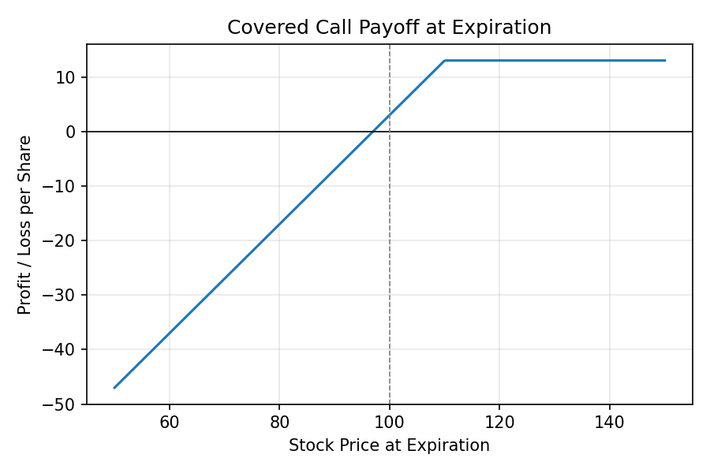

Strategy 01
Covered Calls: Getting Paid While You Wait
- Risk profile
- Moderately conservative
- Best for
- Stocks you are content to hold at current prices
- Max gain
- Premium + appreciation up to strike
- Max loss
- Stock price minus premium collected

A covered call is a reasonable place to begin thinking about options because it does not require you to take on a new kind of risk. It asks you to give something up instead. The setup is simple: you already own shares of a stock, you expect it to trade in a relatively narrow range over the next month or so, and you would be willing to sell it at a somewhat higher price if that price were reached. Given those conditions, you sell a call option at that higher strike and collect a premium for doing so.
The term "covered" refers to the fact that you own the underlying shares. One standard options contract controls one hundred shares, so selling one call against one hundred shares you own means that if the stock rises above the strike price at expiration, you can fulfill your obligation to deliver the shares without buying anything on the open market. This is what distinguishes a covered call from a naked call, which carries theoretically unlimited risk.
The payoff diagram makes the tradeoff visible. On the left side of the chart, when the stock declines, your position loses money in roughly the same way a long stock position does, except that the premium you collected shifts the loss curve upward slightly. That small cushion does not protect you from a serious drop, but it does mean your breakeven is fractionally lower than it would be otherwise. On the right side, once the stock moves above the strike price, your payoff flattens out. Every dollar of additional appreciation above the strike goes to the buyer of the call rather than to you.
In concrete terms, suppose a stock trades at 100 and you sell a 110-strike call for a three-dollar premium. If the stock sits at 108 at expiration, the call expires worthless and you keep the three dollars of premium plus the eight dollars of stock appreciation, for a total of eleven dollars per share. If the stock reaches 125, you deliver your shares at 110, collect the three-dollar premium, and your total gain is thirteen dollars per share regardless of how far the stock continued to rise. If the stock falls to 85, you lose fifteen dollars on the stock but keep the three-dollar premium, so your net loss is twelve dollars.
This is a strategy that tends to appeal to investors who have already decided they would be satisfied selling a position at a certain price. The covered call simply converts that intention into a more structured commitment and compensates them for making it. The two risks worth understanding clearly are that a large downward move will not be meaningfully offset by the premium collected, and that a stock that rises sharply past the strike will produce regret rather than satisfaction if the investor had stronger conviction than the structure implied.